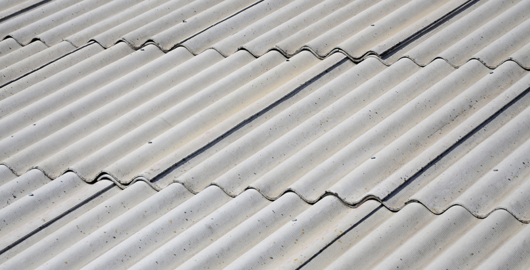

Выбор покрытия для крыши зависит не только от его эксплуатационных качеств, но и от удобства монтажа. А итоговая цена складывается из стоимости стропильной системы, кровельного материала и особенностей проекта – чем он сложнее, тем больше придется потратить на мастеров.
Давайте посмотрим на самые распространенные кровельные материалы именно под этим углом.
Шифер, или асбоцементные волнистые листы, в прошлом массово использовали в частном домостроении, но сегодня их выбирают все реже. Они недорогие, легко монтируются, у них большой срок службы. Из минусов – большой вес и хрупкость.
Металлочерепица – материал, который изготавливают из окрашенного листового металла. Длину листов можно варьировать, что позволяет минимизировать количество стыков. Кровля из металлочерепицы очень мало весит – это уменьшает требования к прочности стропильной системы. В то же время материал не подходит для изогнутых крыш и сильно шумит во время дождя.
Керамическая черепица – красивый и долговечный материал, но это отражается на его цене. Благодаря небольшим размерам элементов можно использовать черепицу на изогнутых кровлях. Однако она много весит, поэтому стропильная система должна выдерживать большую нагрузку.
Гибкая черепица SHINGLAS обладает всеми необходимыми качествами: она превосходно смотрится на крыше, мало весит, создает герметичное и долговечное покрытие, почти не требует ухода и легко ремонтируется. К тому же подходит как для плоских скатов, так и для изогнутых поверхностей. Однако ее нельзя применять на кровлях, имеющих уклон меньше 12 градусов. Цена материала зависит от выбранной коллекции: в среднем он дороже шифера и металлочерепицы, но дешевле керамики.
Конструкции крыши и кровельного пирога должны учитывать специфику кровельного материала. Поэтому его выбирают еще на этапе проектирования дома – уж во всяком случае до возведения стропильной системы, устройство которой зависит от свойств материала и технологии его монтажа.
Стропильная система под шифер должна быть достаточно прочной, чтобы выдерживать нагрузку от самого материала и снега. Масса одного листа составляет от 23 до 35 кг в зависимости от марки. Поскольку он сам по себе довольно жесткий, обрешетку можно делать пореже, но так, чтобы каждый лист ложился как минимум на три опоры.
Шифер фиксируют гвоздями диаметром 4–5 мм и длиной до 120 мм, поэтому толщина досок обрешетки должна быть достаточной, чтобы надежно удерживать такой гвоздь.
Обрешетка под металлочерепицу должна быть из 25-миллиметровой доски с шагом, равным длине ее волны – например, 35 см. Материал обладает высокой теплопроводностью, поэтому на внутренней поверхности кровли может образовываться конденсат. Чтобы отводить его наружу, под обрешетку монтируют паропроницаемую диффузионную мембрану.
Работать с металлочерепицей следует бережно, чтобы не повредить защитное покрытие. Царапины необходимо сразу же закрашивать, чтобы они стали очагом коррозии.
Стропильная система под керамическую черепицу должна учитывать, что квадратный метр материала весит около 50 кг. Это значительная нагрузка сама по себе, а зимой к ней добавляется еще и вес снега. Учитывая, что форма черепичной крыши, как правило, сложная, расчет должен делать специалист.
Ошибки здесь чреваты: если под нагрузкой от черепицы, снега и ветра крыша деформируется, она потечет сразу во многих местах. Также нужно учесть, что для подъема керамической черепицы придется использовать специальные механизмы.
Технология монтажа гибкой черепицы SHINGLAS продумана так, чтобы максимально упростить работу мастера, но при этом получить надежную и долговечную кровлю. Черепицу укладывают на сплошное основание из любого подходящего материала – например, из фанеры или ОСП. Основное требование – оно должно быть достаточно жестким.
Для герметичности основание кровли из мягкой черепицы закрывают подкладочным ковром, поверх которого последовательно монтируют пластины. Каждый элемент фиксируют сначала самоклеящимся слоем, а затем прибивают гвоздями или с помощью нейлера. Опытный кровельщик укладывает примерно 17 гонтов черепицы за 7 минут, с нейлером – всего за 3. Так за одну смену он может смонтировать до 70 м² мягкой черепицы.
Небольшой размер гонтов – так называют элементы гибкой черепицы – еще сильнее облегчает работу и минимизирует количество отходов. Выигрывают обе стороны: кровельщики делают все быстро и качественно, а заказчик не тратит лишних денег, потому что материал покупают с минимальным запасом.